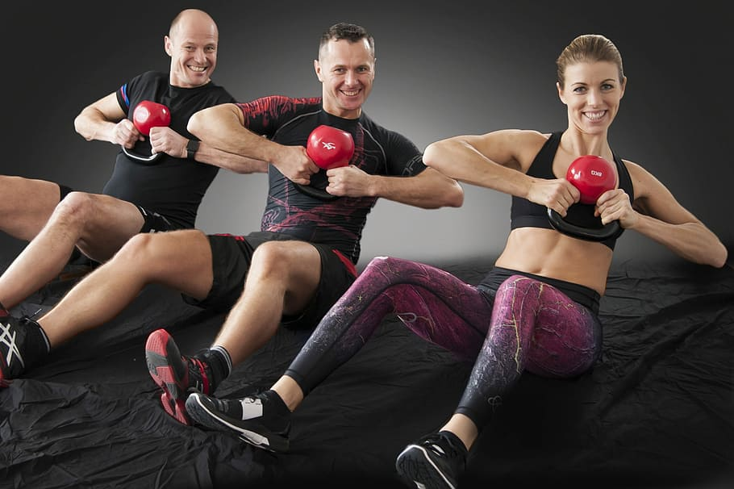

Kettlebell power training is an explosive and dynamic form of exercise that combines strength, speed, and endurance
in a single, fluid movement. Unlike traditional weights, the unique shape of the kettlebell—a rounded iron ball with
a handle—allows for a wider range of motion and challenges the body in ways that dumbbells or barbells simply can't.
This style of training emphasizes functional movements, helping to improve everyday physical tasks while sculpting a
lean and powerful physique.
The hallmark of kettlebell power lies in its ability to engage multiple muscle groups at once. A simple swing, for example,
not only targets the legs, hips, and glutes but also engages the core, shoulders, and grip strength. These ballistic movements
are designed to increase power output, speed, and coordination, giving athletes and fitness enthusiasts the ability to perform
high-intensity moves like snatches, cleans, and jerks with finesse and control.
One of the key benefits of kettlebell power training is the way it builds explosive strength. Exercises like the kettlebell
swing generate force from the hips and transfer it through the body, training the fast-twitch muscle fibers responsible for
speed and agility. This explosive power is beneficial for athletes involved in sports that require bursts of strength, such
as sprinting, football, or martial arts.Kettlebell power training also doubles as a cardiovascular workout. The continuous
flow of movement elevates the heart rate, making it an excellent way to improve endurance and burn fat, all while maintaining
or even building muscle mass. It's a highly efficient workout, often requiring less time to achieve better results compared
to more traditional methods.
CORRECT WAY TO KETTLEBELL POWER
